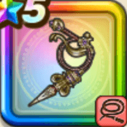

ルイーダウィップ
攻略班 9.0点 / まわしげりマヌーサ麗しきコンビネーション酒場のスペシャルオーダー用意周到宴もたけなわ
くわしい特徴
【レベル別習得スキル】 Lv1【盗賊】攻撃力+5 Lv10まわしげり（消費MP：8）足で周囲をなぎはらい敵全体に威力110%の体技ダメージを与える Lv15マヌーサ（消費MP：16）敵全体を幻でつつみこむ Lv20麗しきコンビネーション（消費MP：43）敵1体に威力800%の体技ダメージを与え不運【斬・体】を付与する。さらに味方全体の会心率か回復呪文の回復量を上げる Lv30酒場のスペシャルオーダー（消費MP：56）敵全体に威力250%(メタル系に+25)のデイン体技ダメージを2回与える。このスキルはまれに直撃し、まれに不運【斬・体】を付与する Lv35水系へのダメージ+5% Lv40悪魔系へのダメージ+5% Lv45攻撃力+12 Lv50用意周到（消費MP：8）戦闘開始時に敵1体、追加でまれに敵全体に不運【斬・体】を付与する。この効果はダメージを受けるときに会心や直撃の発生確率が1.5倍になる Lv50宴もたけなわ（消費MP：15）戦闘開始時に味方全体のみかわし率を上げる(効果1~2ターン) 【限界突破スキル】 1凸スキルの斬撃・体技ダメージ+7% 2凸スキルの斬撃・体技ダメージ+7% 3凸スキルの斬撃・体技ダメージ+7% 4凸スキルの斬撃・体技ダメージ+7%